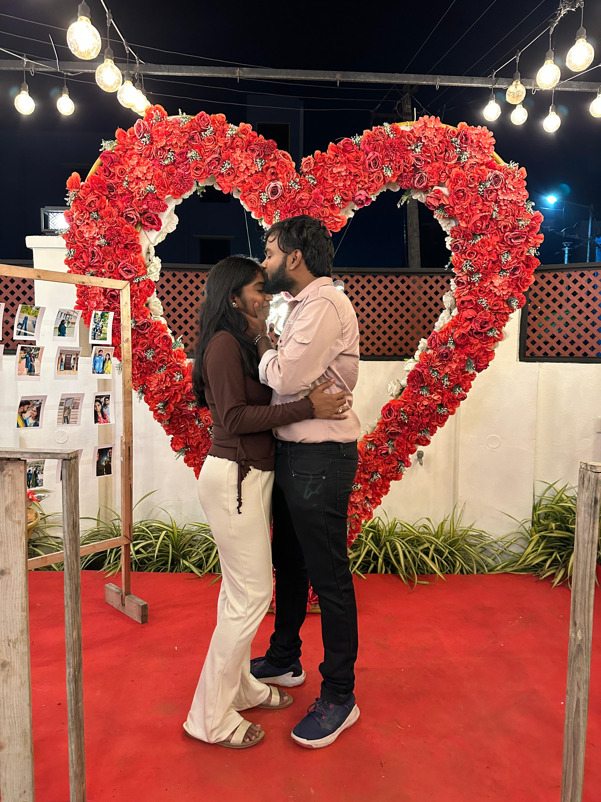

To My Beautiful Wife

I cherished the day we wandered the mall,
Laughter and wonder wrapped it all.
You lit a spark I can’t disguise,
A gentle glow within your eyes.

Step by step, we’ll write our song,
Hand in hand, where hearts belong.
Word by word, our bond will grow,
Through every high, through every low.
And know, my dear, it’s always true,
I’ll be there....only for you.
I Love You
❤